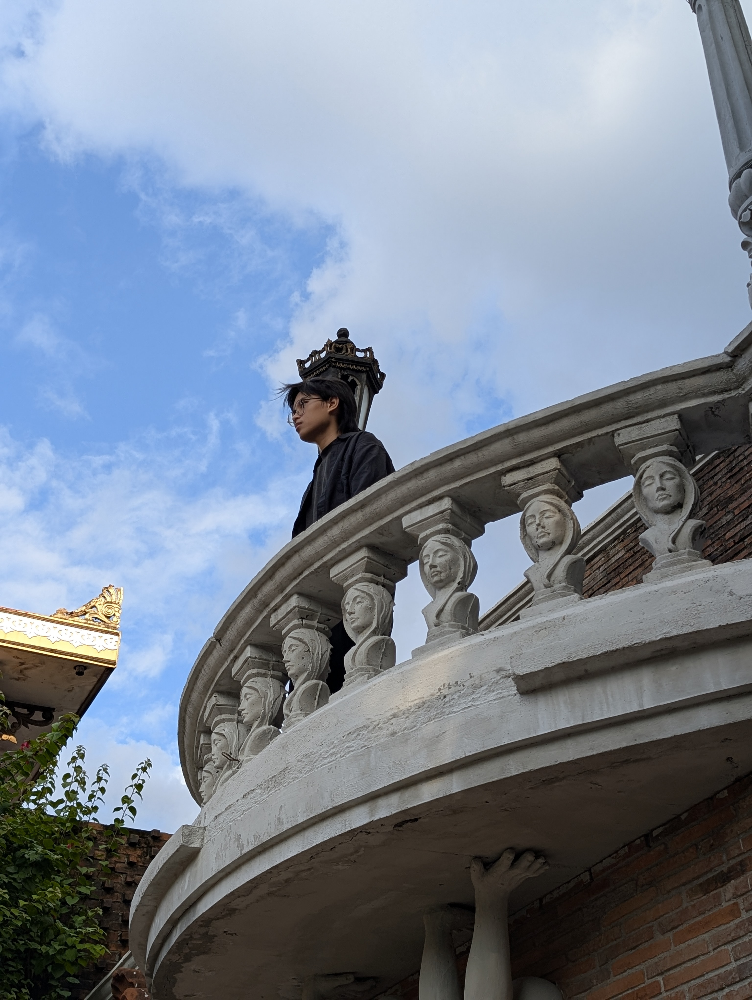
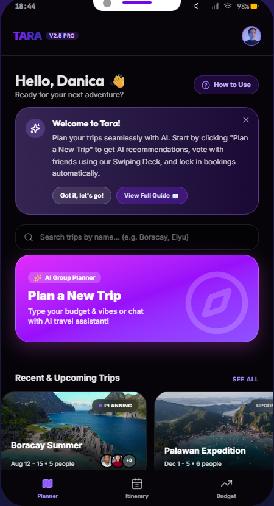
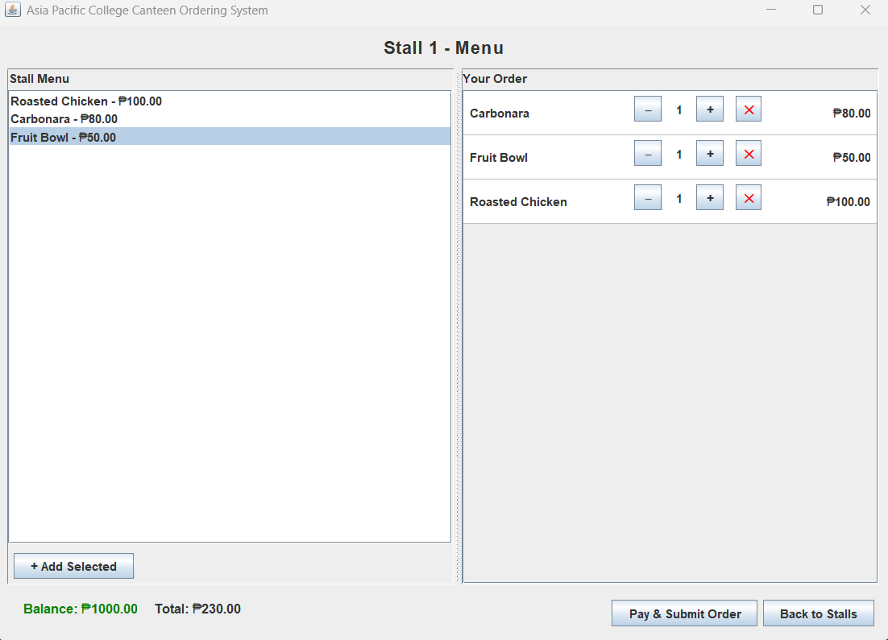
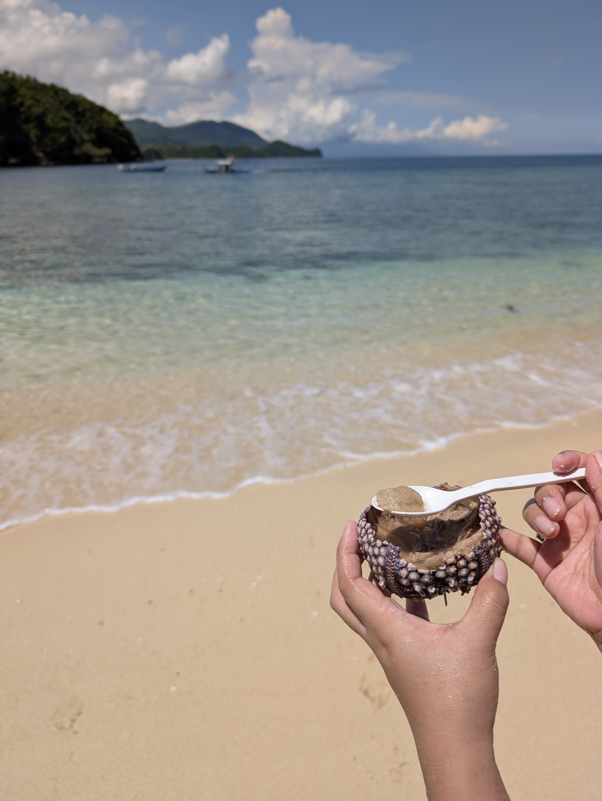
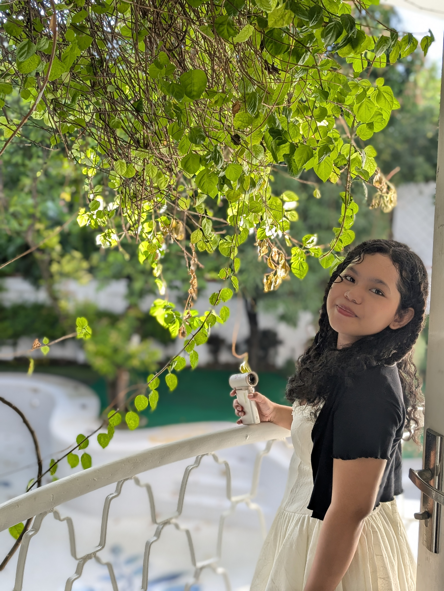

College
Asia Pacific College
Bachelor of Science in Computer Science (BSCS-251)
2025 - 2029
Socrates

I'm Leo Donn Araneta, a Computer Science student at Asia Pacific College with an interest in software development, artificial intelligence, and automation. I enjoy exploring new technologies and turning ideas into practical projects, whether through school activities, personal projects, or hackathons. I'm particularly interested in how AI can be integrated into software to solve real-world problems and make processes more efficient.
I believe the best way to learn is by building things, understanding how they work, and continuously improving them.
My goal is to pursue a career in AI automation, software engineering, or the SAP field. I'm still open to exploring different opportunities within these fields as I continue developing my technical skills, expanding my knowledge, and discovering where my interests and strengths can take me.
Bachelor of Science in Computer Science (BSCS-251)
2025 - 2029

Science, Technology, Engineering, and Mathematics
2022 - 2024

Built for USERDES to fix chaotic group vacation planning. Powered by the Gemini API to coordinate group costs, discover local spots, and generate customized travel schedules.

A desktop cafeteria ordering system built in Java Swing using OOP and CardLayout. Features student registration, multi-stall menu selection, order summary confirmation, and a staff dashboard to manage the kitchen queue.
Ran the data analysis for a campus air quality research paper, using Python (pandas and seaborn) to clean 12 months of sensor logs and analyze CO2 spikes in the APC library.
Gintama

One Piece

Yu Yu Hakusho

Crime and Punishment

The Alchemist

Man's Search for Meaning


